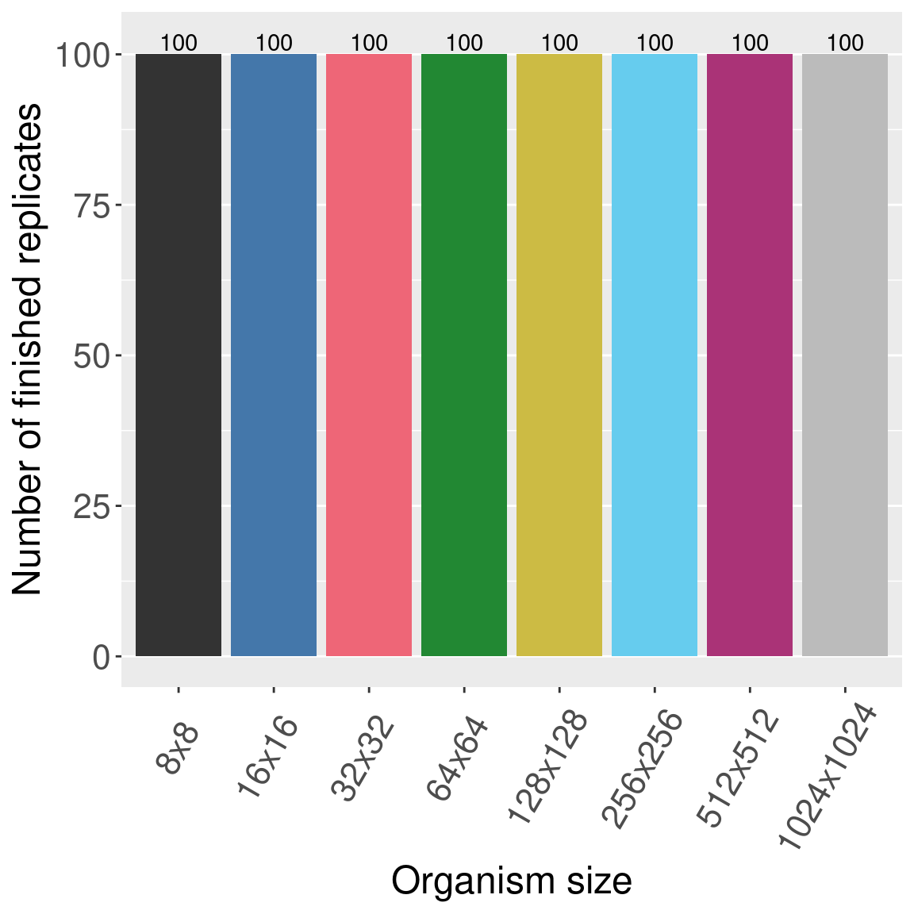
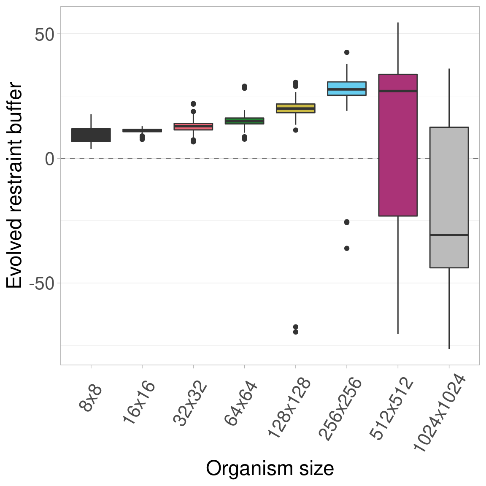
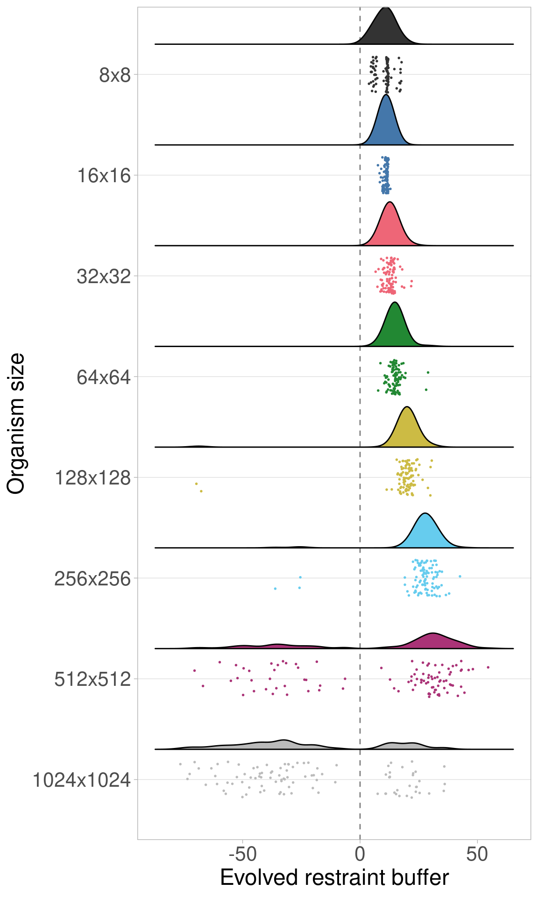

Section 9 Infinite genome experiment
Building off the genome length experiment, we wanted to ensure our results were not an artifact of limited genome size. Genomes in biological organisms can be extremely large compared to our 400-bit genomes. Therefore, we extended the model to support infinite genomes.
Organisms with infinite genomes have no limit on the restraint buffer values they can evolve. In an infinite genome, restraint threshold is set at zero, and thus all non-negative restraint values are restrained. Organisms begin with a restraint buffer of zero. Each mutation (both somatic and germ) always has a 60% probability of lowering restraint. In this way, the infinite genome has the same probability of a restraint-reducing mutation as finite genomes have at their restraint threshold. Furthermore, mutational pressure does not increase with the restraint buffer as it does in finite genomes.
Here, we show the results of re-running the baseline experiment using an infinite genome.
Since we are replicating the baseline experiment, we also include the 8x8 and 1024x1024 organism sizes.
The configuration script and data for the experiment can be found under 2021_03_12__org_sizes_inf/ in the experiments directory of the git repository.
9.1 Data cleaning
Load necessary R libraries
library(dplyr)
library(ggplot2)
library(ggridges)
library(scales)
library(khroma)Load the data and trim to only include the final generation.
# Load the data
df = read.csv('../experiments/2021_03_12__org_sizes_inf/evolution/data/scraped_evolution_data.csv')
# Trim off NAs (artifacts of how we scraped the data) and trim to only have gen 10,000
df2 = df[!is.na(df$MCSIZE) & df$generation == 10000,]We group and summarize the data to make to ensure all replicates are present.
# Group the data by size and summarize
data_grouped = dplyr::group_by(df2, MCSIZE)
data_summary = dplyr::summarize(data_grouped, mean_ones = mean(ave_ones), n = dplyr::n())We clean the data and create a few helper variables to make plotting easier.
# Calculate restraint value (infinite genome there is no difference)
df2$restraint_value = df2$ave_ones
# Make a nice, clean factor for size
df2$size_str = paste0(df2$MCSIZE, 'x', df2$MCSIZE)
df2$size_factor = factor(df2$size_str, levels = c('8x8', '16x16', '32x32', '64x64', '128x128', '256x256', '512x512', '1024x1024'))
df2$size_factor_reversed = factor(df2$size_str, levels = rev(c('8x8', '16x16', '32x32', '64x64', '128x128', '256x256', '512x512', '1024x1024')))
data_summary$size_str = paste0(data_summary$MCSIZE, 'x', data_summary$MCSIZE)
data_summary$size_factor = factor(data_summary$size_str, levels = c('8x8', '16x16', '32x32', '64x64', '128x128', '256x256', '512x512', '1024x1024'))
# Create a map of colors we'll use to plot the different organism sizes
color_vec = as.character(khroma::color('bright')(7))
color_map = c(
'8x8' = '#333333',
'16x16' = color_vec[1],
'32x32' = color_vec[2],
'64x64' = color_vec[3],
'128x128' = color_vec[4],
'256x256' = color_vec[5],
'512x512' = color_vec[6],
'1024x1024' = color_vec[7]
)
# Set the sizes for text in plots
text_major_size = 18
text_minor_size = 16 9.2 Data integrity check
Now we plot the number of finished replicates for each treatment to make sure all data are present. Each bar/color shows a different organism size. 
9.3 Plot
Here we plot all the data at once. Colors/boxplots represent different organism sizes.
9.3.1 Boxplots

9.3.2 Raincloud plots
We can plot the same data via raincloud plots.
## Picking joint bandwidth of 3.57
These plots show that the same trend observed in the baseline experiment (that evolved restraint buffers initially increase and then decrease with increasing organism size) still appears when organism genomes are not limited in length.
9.4 Statistics
First, we perform a Kruskal-Wallis test across all organism sizes to indicate if variance exists. If variance exists, we then perform a pairwise Wilcoxon Rank-Sum test to show which pairs of organism sizes significantly differ. Finally, we perform Bonferroni-Holm corrections for multiple comparisons.
res = kruskal.test(df2$restraint_value ~ df2$MCSIZE, df2)
df_kruskal = data.frame(data = matrix(nrow = 0, ncol = 3))
colnames(df_kruskal) = c('p_value', 'chi_squared', 'df')
df_kruskal[nrow(df_kruskal) + 1,] = c(res$p.value, as.numeric(res$statistic)[1], as.numeric(res$parameter)[1])
df_kruskal$less_0.01 = df_kruskal$p_value < 0.01
print(df_kruskal)## p_value chi_squared df less_0.01
## 1 6.606587e-79 383.9432 7 TRUEWe see that significant variation exists, so we perform pairwise Wilcoxon tests on each to see which pairs of sizes are significantly different.
size_vec = c(16, 32, 64, 128, 256, 512)
df_test = df2
df_wilcox = data.frame(data = matrix(nrow = 0, ncol = 5))
colnames(df_wilcox) = c('size_a', 'size_b', 'p_value_corrected', 'p_value_raw', 'W')
for(size_idx_a in 1:(length(size_vec) - 1)){
size_a = size_vec[size_idx_a]
for(size_idx_b in (size_idx_a + 1):length(size_vec)){
size_b = size_vec[size_idx_b]
res = wilcox.test(df_test[df_test$MCSIZE == size_a,]$restraint_value, df_test[df_test$MCSIZE == size_b,]$restraint_value, alternative = 'two.sided')
df_wilcox[nrow(df_wilcox) + 1,] = c(size_a, size_b, 0, res$p.value, as.numeric(res$statistic)[1])
}
}
df_wilcox$p_value_corrected = p.adjust(df_wilcox$p_value_raw, method = 'holm')
df_wilcox$less_0.01 = df_wilcox$p_value_corrected < 0.01
print(df_wilcox)## size_a size_b p_value_corrected p_value_raw W less_0.01
## 1 16 32 3.317841e-10 4.739773e-11 2307.0 TRUE
## 2 16 64 3.767632e-24 3.767632e-25 759.5 TRUE
## 3 16 128 5.749859e-30 3.833239e-31 249.5 TRUE
## 4 16 256 2.254278e-29 1.610199e-30 300.0 TRUE
## 5 16 512 1.575007e-04 3.150014e-05 3296.0 TRUE
## 6 32 64 4.352278e-10 7.253796e-11 2333.0 TRUE
## 7 32 128 1.138873e-26 1.035339e-27 534.5 TRUE
## 8 32 256 2.625866e-29 2.019897e-30 308.0 TRUE
## 9 32 512 2.824927e-04 7.062318e-05 3373.0 TRUE
## 10 64 128 1.477957e-23 1.642174e-24 817.5 TRUE
## 11 64 256 5.981331e-28 4.984443e-29 423.0 TRUE
## 12 64 512 7.003790e-04 2.334597e-04 3493.5 TRUE
## 13 128 256 5.681587e-23 7.101983e-24 876.0 TRUE
## 14 128 512 4.314526e-03 2.157263e-03 3744.0 TRUE
## 15 256 512 3.971985e-01 3.971985e-01 5347.0 FALSE